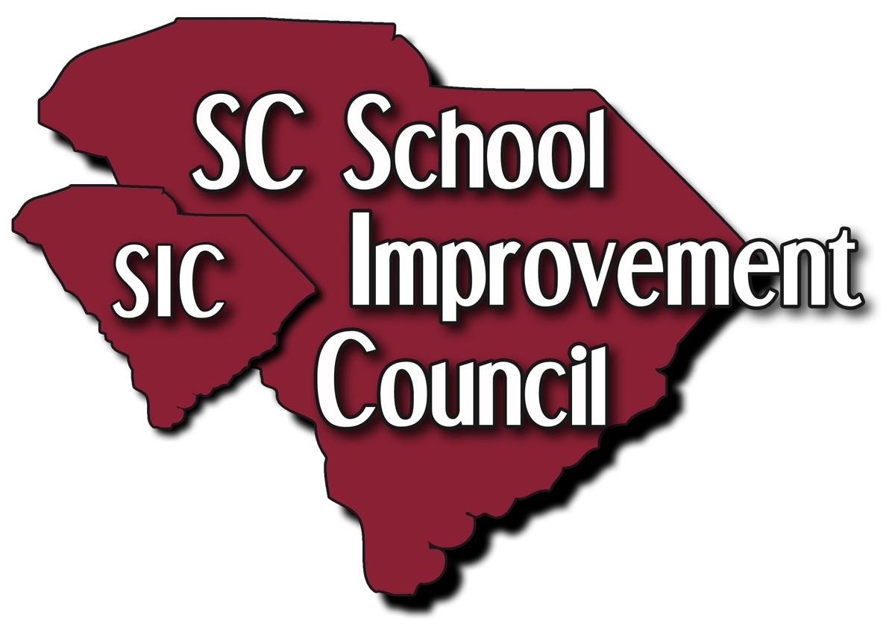

About CFEC
The work of CFEC is focused primarily on underserved families and their students (low income, English learners, those with disabilities, those in foster care, migrants, homeless, and marginalized communities). Housed within the SC School Improvement Council (SC-SIC) at the University of South Carolina College of Education, CFEC will make its tools, trainings, and materials available to all stakeholders statewide through its website and other venues.
CFEC’s regional liaisons will deliver training and technical assistance in family engagement directly to identified districts, schools, families, educators and communities. The University of South Carolina College of Education Research Institute and members of the College of Education faculty will work with CFEC’s leadership team and liaisons to ensure all training and technical assistance is culturally responsive and grounded in the most current research.
CFEC’s liaisons will work with approximately 24 identified school communities across the state, providing ongoing, intensive training and technical assistance for development, implementation, and evaluation of school-wide family engagement plans. Additionally, CFEC will provide up to 40 qualifying teachers with $1,000 stipends over the next four years for their development, implementations, and evaluation of classroom-level family engagement plans with ongoing technical assistance from CFEC liaisons.
CFEC will serve as a hub connecting families and schools with CFEC community partners and others who provide a broad range of services and resources addressing students’ academic and developmental needs. CFEC will also assist schools and communities to engage families from cradle-to-career by facilitating growth of new networks between the early childhood and K-12 education systems.